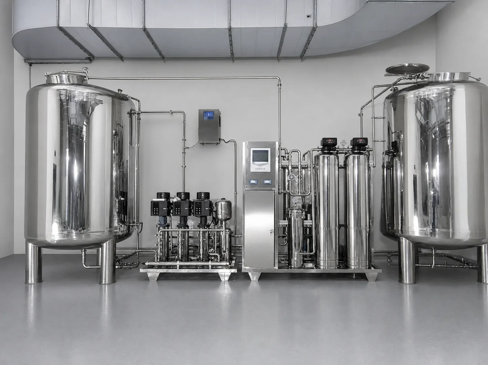

RO Systems for Water Refilling Stations in the Philippines
Equipment selection in plain language — for station owners, not engineers
- 0.5–50 m³/h
- Commercial RO range
- 97–99%
- Typical salt rejection
- Since 1997
- KONCHE manufacturing
A water refilling station lives or dies by its purification equipment. This page explains, in everyday language, how the equipment works, how to size it for your daily container count, how the two common water sources in the Philippines — municipal supply and deep well — change the configuration, what the investment looks like, and what you will spend to keep it running.
Read the Equipment Guide ↓
What equipment does a Philippine water refilling station need?
One integrated treatment line: raw-water tank and pump, filtration pretreatment matched to your water source, a reverse-osmosis (RO) unit sized at about 2–2.5 times your daily container sales, UV (or ozone) disinfection, and a storage tank feeding your washing and filling area. Municipal supply and deep-well water need different pretreatment — this choice, plus correct sizing, matters more than brand or price.
What this page covers
- How the equipment turns source water into refilling-station product water
- Choosing configuration by water source: municipal supply vs deep well
- Sizing by containers sold per day, with a worked table
- Indicative equipment investment and ongoing maintenance costs
Equipment performance values on this page are typical reference ranges. Final specifications are confirmed from your water analysis and demand profile after engineering review — and KONCHE makes no guarantee of station revenue or profit.
Related: Drinking Water Systems · Reverse Osmosis Systems · All KONCHE solutions
What the equipment does, step by step
A refilling station plant is a small production line. Each stage has one job, and each protects the next — the RO membranes are the most expensive part, so everything before them exists to keep them healthy.
Raw-water tank and booster pump
Source water (municipal pipe or well) is stored and fed to the plant at steady pressure, so the filters and membranes always see the same conditions.
Pretreatment filtration
Sediment and multimedia filters catch sand, rust and particles; activated carbon removes chlorine (which would slowly destroy RO membranes) and odors; a softener or antiscalant controls hardness where needed. Deep-well stations often need stronger pretreatment — see the water-source section below.
Reverse osmosis (the core)
Pressure pushes water through dense membranes that typically reject 97–99% of dissolved salts, along with the great majority of particles, organics and microorganisms. This is what turns source water into purified product water. Expect a concentrate stream to drain — roughly 1.5 liters sent to drain for every liter purified at typical small-plant recovery — so plan your floor drainage.
Final disinfection
A low-pressure UV sterilizer (or ozone system) provides a final barrier against bacteria after RO, keeping the product water safe inside the storage tank and piping loop.
Storage, washing and filling
Purified water is stored in a covered tank, containers are washed (often with an ozone-rinsed washer), and the filling area closes the loop. Daily TDS and pressure checks tell you the plant is behaving.
Equipment families behind these stages: Single & Double Stage RO Systems · UF pretreatment · Low-Pressure UV sterilizers · Ozone disinfection systems
Your water source decides the configuration
Most Philippine stations run on one of two sources, and they are not interchangeable. Ask which one you have before comparing equipment prices — the wrong pretreatment is the most common reason stations face early membrane replacement.
| Compare | Municipal / LGU piped supply | Deep well (NWRB-permitted) |
|---|---|---|
| Typical water character | Treated, chlorinated, generally moderate dissolved solids; pressure and quality can vary by area and schedule | Often higher hardness, iron or salinity; turbidity can rise after rains; quality varies well by well |
| Pretreatment emphasis | Sediment filtration + activated carbon (chlorine removal protects membranes) | Stronger multimedia filtration, iron/manganese removal and softening ahead of the RO unit |
| Check before buying | Supply schedule and pressure in your barangay; a simple TDS reading | A full water analysis (TDS, hardness, iron, manganese) and your NWRB permit status |
| Equipment cost tendency | Lower — simpler pretreatment | Higher — more pretreatment stages, well pump and storage |
| What stays the same | The RO unit class, disinfection and storage — sizing by daily containers (next section) | |
Practical guidance, not a substitute for a water test. KONCHE confirms the final configuration from your water analysis after engineering review.
How many GPD does a water refilling station need?
Size from what you sell, not from what the machine is called. One 5-gallon container holds about 19 liters. Real-world output runs below rated output, stations have peak days, and the plant needs headroom for cleaning and growth — so choose a system whose permeate rating is about 2–2.5 times your daily purified-water sales.
| Containers sold per day | Purified water needed | Suggested system class (permeate rating) |
|---|---|---|
| 100 × 5-gallon | ≈ 1,900 L/day (≈ 500 GPD) | 1,000–1,500 GPD |
| 200 × 5-gallon | ≈ 3,800 L/day (≈ 1,000 GPD) | 2,000–2,500 GPD |
| 400 × 5-gallon | ≈ 7,600 L/day (≈ 2,000 GPD) | 4,000–5,000 GPD |
Delivery-based stations with anchor clients (offices, eateries, schools) should lean toward the higher end of the range, because a single anchor client can add a stable daily volume on top of walk-in trade.
What water quality should the equipment deliver?
Expect clearly reduced dissolved solids: a properly running RO plant typically rejects 97–99% of dissolved salts, so a moderate feed becomes low-TDS product water that customers can taste. But "drinkable" in the Philippines is defined by regulation, not by taste:
- The standard: product water should be configured to target the Philippine National Standards for Drinking Water (PNSDW, per DOH Administrative Order 2017-0010).
- The verification: compliance is confirmed by testing at a DOH-accredited laboratory — typically monthly bacteriological testing and annual physical/chemical testing — not by the equipment supplier's claim.
- The permits: plan for a sanitary permit from your LGU and a DOH operational permit. Requirements are set by DOH and LGUs; confirm the current process with your local health office.
Equipment can be configured to target PNSDW parameters — that is a design statement, not a certification. A target statement on a quotation is normal; a supplier promising "DOH-approved water" is promising something only testing can show.
What does the equipment cost to set up?
Complete small-station plants (pretreatment + RO + disinfection + storage) published by Philippine water-equipment suppliers in their listings — reviewed September 2026 — typically appear at roughly ₱150,000 to ₱430,000 depending on GPD class, water-source complexity and tank quality. Deep-well configurations with heavier pretreatment sit toward the higher end. These are market reference points from public listings, not KONCHE quotations; KONCHE pricing is provided per project after configuration review.
| Cost line | What it covers | Budget character |
|---|---|---|
| Purification equipment | Pretreatment, RO unit, disinfection, storage tank | The published ranges above; largest single line |
| Site and installation | Plumbing, drainage for concentrate, electrical, washing/filling area fit-out | Varies with the site; get local quotes |
| Permits and testing | Sanitary permit, DOH operational permit, laboratory tests | Recurring small amounts, not one-time |
| Delivery capability | Tricycle/multicab, containers, commissions | Optional at start; most stations add it to grow |
No guarantee of station income
KONCHE supplies water-treatment equipment and engineering support only. Station revenue, profit and payback period depend on location, management, pricing, competition and many other business factors outside KONCHE's control. Nothing on this page is a promise of earnings.
What maintenance does the equipment need?
Refilling-station plants fail through ignored maintenance far more often than through faulty machines. The schedule below is typical; your operation manual and water conditions set the final intervals.
| Item | Typical interval | Why it matters |
|---|---|---|
| Sediment / cartridge filters | 1–3 months | First defense; clogged filters choke the RO pump |
| Activated carbon | 6–12 months | Exhausted carbon lets chlorine reach and damage membranes |
| Softener salt / antiscalant | Ongoing top-up | Controls hardness scale in membranes |
| RO membranes | 2–3 years (typical) | The expensive line item — pretreatment quality decides lifespan |
| UV lamp | Replace yearly | Output fades before the lamp visibly fails |
| Daily checks | TDS in/out, pressures, tank sanitation schedule | Catches problems while they are still cheap |
Beyond parts, budget for pump electricity proportional to output, and identify who services the plant locally before you buy it — a machine nobody nearby can service is a liability regardless of its price. This is also why the cheapest plant on the market is rarely the cheapest to own: thin tanks, unbranded membranes and missing after-sales support show up as replacement costs in year one. KONCHE builds commercial RO systems from 0.5 to 50 m³/h with stainless-steel (304/316L) wetted parts and industry-standard membranes that local technicians can source consumables for — consumables reference.
Is it better to import from China or buy from a local supplier?
This question comes up constantly in Philippine station-owner communities, and the honest answer is that both routes work — with different risks:
- Importing directly lowers the equipment price, but you carry commissioning, spare-part logistics and warranty follow-up yourself, and customs processing adds time and fees.
- Buying locally costs more per unit but typically bundles installation, technician access and consumables — valuable in a business where downtime costs you daily sales.
- The middle path many owners land on: buy an internationally manufactured brand through a Philippine equipment distributor — factory-level build quality at a locally serviceable installation.
KONCHE has manufactured water-treatment equipment in Shenzhen since 1997 and works with equipment distributors who serve Philippine station owners. If you are planning a station, contact us and we will connect you with a distributor for your area and source water. If you operate a water-equipment dealership in the Philippines and are evaluating brands to carry, the same inquiry reaches our distributor team.
Frequent questions from Philippine station owners
How many GPD do I need for 200 containers a day?
About 1,000 GPD of purified water (200 × ~19 L). Applying the 2–2.5× sizing rule for real-world output, peaks and headroom, choose a 2,000–2,500 GPD class system.
What permits does a water refilling station need in the Philippines?
Plan for a sanitary permit from your LGU and a DOH operational permit, supported by laboratory testing at a DOH-accredited laboratory against PNSDW — typically monthly bacteriological plus annual physical/chemical tests. A deep well additionally requires an NWRB permit. Confirm current requirements with your local health office.
How long do RO membranes last?
Typically 2–3 years with good pretreatment and on-time cartridge changes. High hardness, iron or sediment in feed water shortens membrane life — another reason the water-source configuration comes first.
Can one machine handle both municipal and deep-well water?
The RO stage can be the same class, but pretreatment differs (carbon-led vs iron/softening-led). Configure after a water analysis rather than hoping one layout fits both.
Does KONCHE guarantee how much my station will earn?
No. KONCHE supplies equipment and support. Equipment performance is quoted as ranges and confirmed after engineering review; business results depend on many factors outside our control.
Tell us about
your water.
Send your location, water source (municipal or deep well), daily container target and any water analysis you have. KONCHE will recommend a configuration class and connect you with a distributor serving your area.